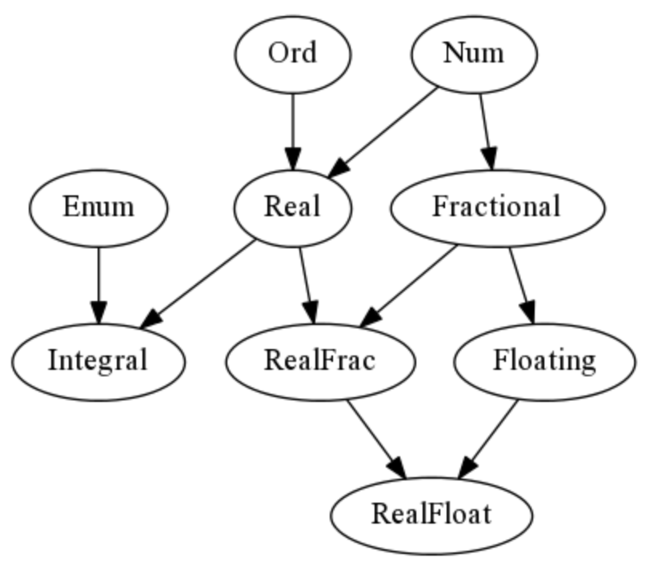
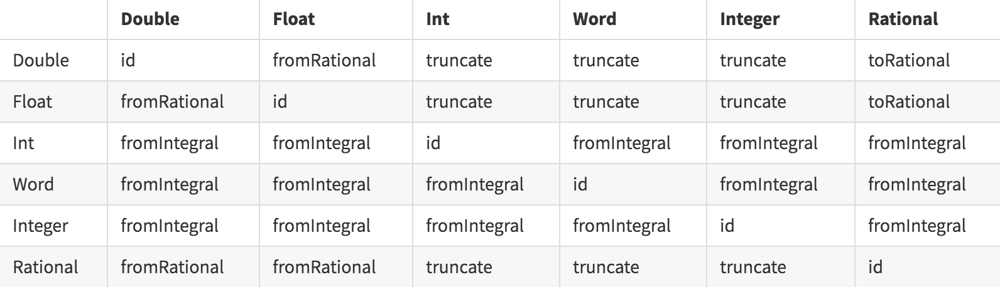

Numeric Tower(数值塔)
Haskell的数值塔是不寻常的，对于新手来说，这是一些困惑的根源。
Haskell是少数几种包含静态类型的重载literals(文字)而没有其他语言中常见的coercions(强制)机制的语言之一。
更令人困惑的是，Haskell中的numerical literals(数值文字)被从numeric类型类分解为一个函数，该函数产生一个多态值，该值可以在call-site(调用站点)实例化为Num或Fractional类型类的任何实例，取决于推断的类型。
用一个直白的比喻，我们实际上是将对象放置在孔中，并且孔的大小和形状限定了放置在孔中的对象。这与其他语言非常不同，在其他语言中，像2.718这样的数字文字在编译器中被硬编码为特定类型(double或something)，并且在运行时根据需要将該值强制转换为更小的值或更大的值。1
2
3
4
542 :: Num a => a
fromInteger (42 :: Integer)
2.71 :: Fractional a => a
fromRational (2.71 :: Rational)
numeric(数值)类型类层次结构的定义如下:1
2
3
4
5
6
7class Num a
class (Num a, Ord a) => Real a
class Num a => Fractional a
class (Real a, Enum a) => Integral a
class (Real a, Fractional a) => RealFrac a
class Fractional a => Floating a
class (RealFrac a, Floating a) => RealFloat a

具体的数字类型(from: 左列 to: 顶行)之间的转换是通过几个通用函数完成的。

Integer
GHC中的Integer类型由GMP(libgmp)任意精度算术库实现。
与Int类型不同，Integer值的大小仅受可用内存的限制。
最值得注意的是，libgmp是动态链接已编译Haskell二进制文件的少数几个库之一。
integer-simple是一個可選的库，它可链接，可以用來代替libgmp。
請看:
Complex
Haskell支持通过Data.Complex模块中的Complex数据类型使用复数进行算术运算。
第一个参数是实部，第二个参数是虚部。
该类型具有单个参数，并从该参数的类型继承其numerical(数值)类型类组件(Num, Fractional, Floating)。
1 | -- 1 + 2i |
仅当Complex的参数是RealFloat的实例时，才定义Complex的Num实例。1
2
3
4
5
6
7
8
9
10
11
12
13
14λ: 0 :+ 1
0 :+ 1 :: Complex Integer
λ: (0 :+ 1) + (1 :+ 0)
1.0 :+ 1.0 :: Complex Integer
λ: exp (0 :+ 2 * pi)
1.0 :+ (-2.4492935982947064e-16) :: Complex Double
λ: mkPolar 1 (2*pi)
1.0 :+ (-2.4492935982947064e-16) :: Complex Double
λ: let f x n = (cos x :+ sin x)^n
λ: let g x n = cos (n*x) :+ sin (n*x)
Scientific
Scientific提供使用科学计数法表示的任意精度数字。构造函数采用任意大小的Integer参数表示数字，并使用Int表示指数。另外，该值可以从字符串中解析，也可以从Double/Float中强制转换。1
2
3
4
5
6
7
8
9
10
11
12
13
14
15
16
17
18
19
20
21scientific :: Integer -> Int -> Scientific
fromFloatDigits :: RealFloat a => a -> Scientific
import Data.Scientific
c, h, g, a, k :: Scientific
c = scientific 299792458 (0) -- 光速
h = scientific 662606957 (-42) -- 普朗克常数
g = scientific 667384 (-16) -- 引力常数
a = scientific 729735257 (-11) -- 优良的结构常数
k = scientific 268545200 (-9) -- Khinchin常数
tau :: Scientific
tau = fromFloatDigits (2*pi)
maxDouble64 :: Double
maxDouble64 = read "1.7976931348623159e308"
-- Infinity 无穷
maxScientific :: Scientific
maxScientific = read "1.7976931348623159e308"
-- 1.7976931348623159e308
Statistics(统计)
1 | import Data.Vector |
Constructive Reals(建设性领域)
除了使用有限精度浮点数对实数建模之外，我们还可以使用Num运算，当执行算术或超越函数之类的运算时，该运算符在内部操作表达式的幂级数展开，而在执行中间计算时不会失去精度。
然后，我们简单地切出固定数量的项，并将结果数近似为所需的精度。这种方法并非没有局限和警告, 特别是它可能会出现diverge(分歧)。1
2
3
4
5
6
7
8
9
10
11
12
13
14
15
16
17
18
19
20
21
22exp(x) = 1 + x + 1/2*x^2 + 1/6*x^3 + 1/24*x^4 + 1/120*x^5 ...
sqrt(1+x) = 1 + 1/2*x - 1/8*x^2 + 1/16*x^3 - 5/128*x^4 + 7/256*x^5 ...
atan(x) = x - 1/3*x^3 + 1/5*x^5 - 1/7*x^7 + 1/9*x^9 - 1/11*x^11 ...
pi = 16 * atan (1/5) - 4 * atan (1/239)
import Data.Number.CReal
-- algebraic
phi :: CReal
phi = (1 + sqrt 5) / 2
-- transcendental
ramanujan :: CReal
ramanujan = exp (pi * sqrt 163)
main :: IO ()
main = do
putStrLn $ showCReal 30 pi
-- 3.141592653589793238462643383279
putStrLn $ showCReal 30 phi
-- 1.618033988749894848204586834366
putStrLn $ showCReal 15 ramanujan
-- 262537412640768743.99999999999925
SAT Solvers
一组称为可满足性问题的约束问题出现在从类型检查到包管理的许多不同学科中。简单地说，一个可满足性问题试图从一系列变量中找到conjunctions(连词)和disjunctions(析词)的解。例如:1
(A v ¬B v C) ∧ (B v D v E) ∧ (D v F)
要使用picosat库解决此问题，可以将其写入zero-terminated整数列表，并根据数与变量的关系fed to(喂給)求解器:1
2
3
4
5
6
7
8
91 -2 3 -- (A v ¬B v C)
2 4 5 -- (B v D v E)
4 6 -- (D v F)
import Picosat
main :: IO [Int]
main = do
solve [[1, -2, 3], [2,4,5], [4,6]]
-- Solution [1,-2,3,4,5,6]
SAT求解器本身可以用来解决以这种形式存在的数以百万计的变量的可满足性问题，并且经过微调。
請看:
SMT Solvers
将SAT问题推广到包含谓词的其他理论中，就产生了非常复杂的Satisfiability Modulo Theory(可满足性模理论)问题。
现有的SMT求解器是非常复杂的项目(通常由大型机构提供资金)，通常必须通过外部函數接口或称为SMT-lib的通用接口来调用。
Haskell中最常用的两个是斯坦福大学的cvc4和微软研究院的z3。
作为一个例子，下面是如何解决一个简单的cryptarithm(密码算法):1
2
3M O N A D
+ B U R R I T O
= B A N D A I D
使用SBV庫:1
2
3
4
5
6
7
8
9
10
11
12
13
14
15import Data.Foldable
import Data.SBV
-- | val [4,2] == 42
val :: [SInteger] -> SInteger
val = foldr1 (\d r -> d + 10*r) . reverse
puzzle :: Symbolic SBool
puzzle = do
ds@[b,u,r,i,t,o,m,n,a,d] <- sequenceA [ sInteger [v] | v <- "buritomnad" ]
constrain $ allDifferent ds
for_ ds $ \d -> constrain $ inRange d (0,9)
pure $ val [b,u,r,r,i,t,o]
+ val [m,o,n,a,d]
.== val [b,a,n,d,a,i,d]
让我们看一下所有可能的解决方案:1
2
3
4
5
6
7
8
9
10
11
12
13λ: allSat puzzle
Solution #1:
b = 4 :: Integer
u = 1 :: Integer
r = 5 :: Integer
i = 9 :: Integer
t = 7 :: Integer
o = 0 :: Integer
m = 8 :: Integer
n = 3 :: Integer
a = 2 :: Integer
d = 6 :: Integer
This is the only solution.这是唯一的解决方案。
請看:
Z3
TODO
請看: